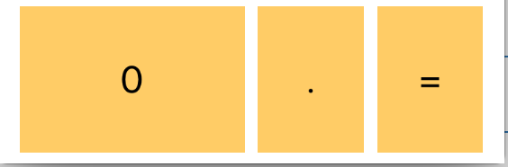
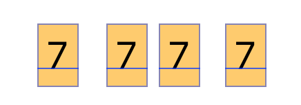
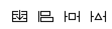
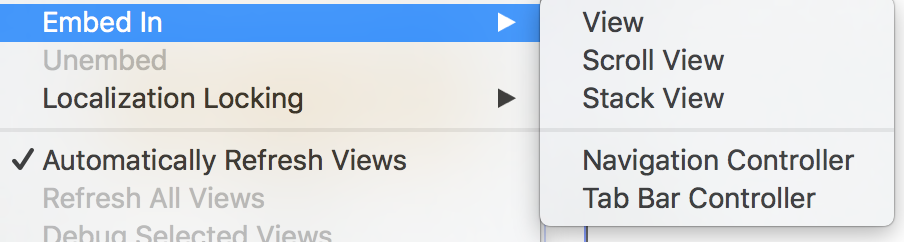
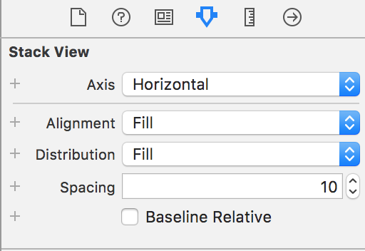
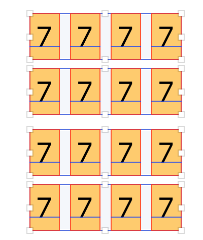
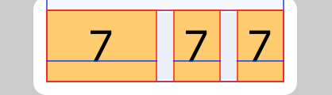
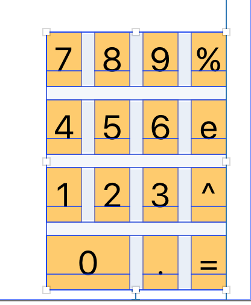
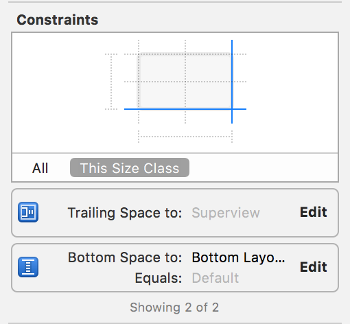

iOS 9加入了stackview這個新元件幫助工程師更快打造UI，盡量減少使用auto layout
今年的CS193P課程的第一個範例－－計算機就改用stackview實作
練習時我不想照它的layout來做，想比照iPhone內建的計算機，將0的按鈕寛度設定其它按鈕的二倍，這個問題請教了老師，花了幾天才試出來
下圖是我想呈現的結果，該如何用stackview刻出來呢？

Step1. 先把button拉進view controller，並複製其它三個

Step2. 選取4個button並加入stackview
方法1: 點選最左邊的stack

方法2: 從選單 (Editor-> Embed In-> Stack View)

Step3. 修改stackview裡面元件的間隔

Step4. 重複上述2個步驟，完成剩下的計算機按鈕

Step5. 將4個stackview再包成一個stackview，垂直間隔也要修改
Step6. 選取最下面一排的stackview，砍掉最左邊的button

Step7. 將最右邊二個button的寛度設成和上一排任一button一樣
Step8. 最後再設定整個stackview的auto layout，這裡是置於右下角


對照之前的教學，使用stackview的確能為工程師省下不少時間，可設計出整齊的介面。